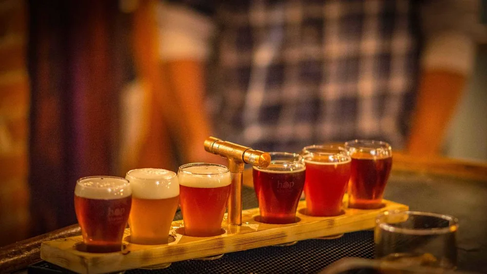

At Hopskeller
Drink menu
House-brewed beer, hand-mixed cocktails, wine, and more from the bar.

Hopskeller Craft Beer Selection
Pint $7.50 / Pitcher $18 / Empty Growler $18 / Growler Refill $12 / Flight of Six $13
AMERICAN INNOVATIONS
RASPBERRY ALE (6.0% ABV, 9 IBU)
Our “flagship beer” and an easy drinker! Aged on raspberries after fermentation, this wheat beer is sweet but tart, with just a hint of raspberry flavor and aroma. Best enjoyed on its own, but pizzas like the Paradise City, the Tangled Up in Blue, or any other pizza with pineapple or spice pair well with this bestseller.
WHITE ROCK WHEAT ALE (4.2% ABV, 5 IBU)
Crisp, bready, tart, and light as a feather, White Rock is our homage to Clifftop, The Conservation Fund, and the Illinois Audubon Society’s 2026 acquisition of 1,000 acres to the White Rock Nature Preserve. Although not a true Berliner Weisse by style, this unique beer shares its cousin brew’s love of syrup additions. Try it by itself for a clean easy-drinker; spice it up with one of our in-house fruit syrups, or turn it into a dynamite shandy with some lemonade or orange soda!
BLUEGRASS BREEZE AMERICAN WHEAT ALE (6.0% ABV, 20 IBU)
Perfect for day-drinking during any season! With a bright and fruity currant-like aroma and a mouth-watering combination of bready, caramel, and biscuit flavors, this malt-forward ale is a fun and easy-drinking beer that’s great with crab cakes, shrimp skewers, or one of our fresh salads.
HIGH DESERT PALE ALE (5.3% ABV, 22 IBU)
A smooth, malt-forward beer that takes the grain bill and hop profile of an Oktoberfest and is reinterpreted as a Northwestern American pale ale. An easy-drinking crowd pleaser with a unique malt profile and a somewhat dry finish. Pairs best with our pizzas that highlight the flavor profiles of Schubert’s Smokehouse sausage and bacon, like Fat Bottomed Girls and Born To Be Wild.
ZERO NEW ENGLAND IPA (7.0% ABV, “0” IBU)
A massively-hopped ale featuring none of the bitterness typically associated with hops—so little, in fact, that the beer has no IBUs to its name! This hazy, straw-colored beer greets you with an intense burst of tropical aromas from El Dorado, Mosaic, and Amarillo hops that call to mind grapefruit, stone fruit, tangerines, mango, and pineapple. When it comes to food, the crunchier, the better. Give it a try with a salad, our bread bites, and any pizza with some spice to it. The Dixie Chicken is a shoo-in for this beer!
ACROSS THE POND IPA (7.6% ABV, 55 IBU)
This IPA merges the best of two styles: the grains, mineral profile and balance of a classic English IPA, and the bold hop flavors of a medley of the “4 Cs” (plus Citra!) classic to IPAs of the American NW. A lively ale featuring the dank resin, citrus and pine notes of Northwestern IPAs, yet crisp enough to make you want another! For food, this is about as perfect of a pizza beer as you can get; enjoy this with anything featuring our homemade pizza sauce and fresh-shredded, premium mozzarella cheese.
MAPLE PECAN MÄRZEN (6.6% ABV, 18 IBU)
Originally made in collaboration with Scott Kurtz (Kurtzhaus Brewing) and Kyle Wolf (Carboy Junkies Homebrew Club), our Maple Pecan Märzen weds the toasty and bready malt flavors of a traditional Oktoberfest lager with 40 lbs. of local-harvested pecans and extra-dark Vermont maple syrup. This is a perfect beer for anything with chicken or brisket, smoked for us across the street at Shorty’s Smokehouse. Great with a Chicken Caesar salad or a Beast of Burden pizza!
BRITISH CLASSICS
HANG GLIDER LIGHT LAGER (4.5% ABV, 8 IBU)
Our light lager is made with English Pearl malt, crisp rice, and English hops to create a unique spin on the quintessential lawnmower beer. With a subtle malt backbone and a crystal-clear finish, this crowd-pleaser is just what you need for patio weather! Given that this is such a light lager, Hang Glider will pair best with our lighter, veggie-forward pizzas like the Instant Karma and Green-Eyed Lady. It’s also great with our pretzels and crab cakes.
MARKET CROSS LONDON LAGER (5.9% ABV, 20 IBU)
Modeled off lagers popular in London in the 1920s, this beer is a unique experience that brings together heritage English malts alongside Fuggles and East Kent Goldings hops. Clean, refreshing, and decidedly English, this all-around easy drinker is perfect for fans of lighter beers and those looking for a lager interpreted in English style. Similar in food pairings to Hang Glider, Market Cross nonetheless holds up well to the pizzas that feature Shorty’s Smokehouse brisket, like the Beast of Burden and Island Fever.
ORMR’S PUB ALE (4.5% ABV, 28 IBU)
In honor of the English town where Matt studied 20 years ago, this beer features all the fun qualities of an English best bitter, along with the citrus hop notes we see in some Cornish ales. This beer also highlights the hops of local 3.9 Hops (Millstadt) and Sugar Creek Malting (Indiana), a farm-to-bag craft maltster. The bready aroma of this ale gives way to a light, flavorful, and refreshing brew. Malt and bread notes are present, but not too intense; this is a dry, crisp beer that finishes clean and with a slight lingering sweetness from the addition of heirloom malted rye. The Vista hops in this ale give it a citrusy character; it’s like drinking a “baby IPA.” Fantastic by itself or with our tenderloin skewers, salads, or pretzels and beer cheese!
BREATH OF HEATHER (3.7% ABV, 11 IBU)
Our first offering of a Scottish-style ale, and we’re thrilled with the result! This dark ale looks mighty, but goes light on the ABV. A malt-forward offering made of some fantastic Scottish malts, this ale features caramel, bread, and toasty notes. This easy-drinker is great year-round; we hope you love it as much as we do! For food, think like a Highlander: go big and go hearty. The Can’t Get Enough, Sweet Child O’ Mine, and Midnight Rambler are practically calling this beer’s name, as does our chicken Caesar salad.
NORTHERN ENGLISH BROWN ALE (6.2% ABV, 26 IBU)
Inspired by ales made around the Great Northern coalfields of England in the late 19th and early 20th centuries, this dark beer features roasted chocolate and coffee flavors with deep caramel and toffee notes. Complex, robust, and the ultimate “food beer,” this pairs well with any of our wood-fired eats. Winner of the 2018 Post-Dispatch’s “Top Pours” for “Best Darker Beer.”
MOORGATE PORTER (5.0% ABV, 22 IBU)
Moorgate is our darkest beer on tap—but don’t let the color scare you! Taking cues from the easy-drinking porters popular among the working class of London in the 19th century, Moorgate features the moderate roast and chocolate flavors we expect from a porter, plus a medium body that keeps the overall experience refreshing. Fans of darker beers will appreciate the complexity of the malt bill; it’s also a great introductory beer to the world of dark ales! Seafood pairs incredibly well with porters; look to our crab cakes and shrimp skewers. Also great with our richer pizza flavors like Just What I Needed and Buffalo Soldier.
CELEBRATION BARLEYWINE (9.5% ABV, 40 IBU)
A hearty and malt-forward brew made for our 10-year anniversary, this English-style barleywine is meant for aging. Best with our spicier pizzas and appetizers, like Buffalo Bites or the Buffalo Soldier. Give it a try over the next several months and into 2028 to see how it evolves!
Craft Cocktails
Aviation
$12Hendrick’s Gin, Crème de Violette, Luxardo Cherry Liqueur, Lemon Juice
Benedictine and Brandy
$12Benedictine and Maison Rouge Brandy
Benchmark Old Fashioned
$12Benchmark Bourbon, Homemade Turbinado Simple Syrup, House Orange Bitters, Luxardo Cherry
Negroni
$12Gin, Caprano Antica Formula Sweet Vermouth, Campari, House Orange Bitters, Luxardo Cherry
Luxardo Manhattan
$12Benchmark Bourbon, Luxardo Cherry Liqueur, Carpano Antiqa, Formula Sweet Vermouth, Aromatic Bitters
Whiskey Sour
$12Benchmark Bourbon, Homemade Sours Mix, Luxardo Cherry
Fun & Fruity Cocktails
Bananas Foster Martini
$12Salted Caramel Bourbon, Banana Cognac, Licor 43 Crème Brûlée, Heavy Cream, Graham Cracker, Whipped Cream, Caramel Finish
Waterloo Fizz
$12Grey Goose Strawberry Lemongrass Vodka, Homemade Strawberry Puree, Fresh Lemon, Seltzer
Blackberry Pomarita
$12Corazon Blanco Tequila, Giffard Mure, Stirrings Pomegranate, House Sours Mix, Fresh Lemon, Seltzer
Cosmopolitan
$12Vodka, Triple Sec, Cranberry Juice, Lime Juice
Grindstaff and Stumpy’s Bloody Mary
$12Stumpy’s Unbroken Vodka, Grindstaff Bloody Mary Mix, Sriracha Hot Sauce, Cracked Pepper, MoCo Mocha Chocolate Coffee Milk Stout, Cracked Pepper
Red Cream Hurricane
$12RumHaven Coconut Rum, Triple Sec, Pineapple Juice, Excel Red Cream Soda
Salted Caramel White Russian
$12Vanilla Vodka, Kahlua, Cream, Caramel Drizzle, Salt
Stumpy’s Basil Lemonade
$12Stumpy’s Unbroken Vodka, Lemonade, Homemade Sours Mix, Basil
House Margarita
$12Tequila, Triple Sec, Homemade Sours Mix, Sea Salt
House Sangria
$8Rotating Sangria with Brandy, Fresh Fruit, Orange Liqueur & Wine
Wine by the Glass and Bottle
Merlot
$6 / $15Pinot Grigio
$6 / $15Cabernet Sauvignon
$6 / $15Sauvignon Blanc
$6 / $15Pinot Noir
$6 / $15Reisling
$6 / $15Moscato
$6 / $15Slushies
In-house alcoholic slushies
Pirate Punch
$10Rotating Slushies
$10Ask about our rotating Bartender’s Special
Shooters & Shots
A short list of shots, including some of our customer favorites. Ask our bartenders about other shots, or create your own!
Liqueur Shots (Rumple Minze, Jager)
$5Pink Whitney
$5Flavored Jack Whiskey Liqueur Shots
$5Green Tea Shooter
$6Vegas Bomb
$6Lemon Drop
$6Chocolate Cake
$6Skrewball
$6Sirène Absinthe
$8Beer Cocktails
Boreal Bomb
$8Borealis Spruce Ale served with a shot of Jagermeister. Pour it all in together or sip Borealis as a chaser
Brown And Mild
$6Northern English Brown Ale & Old Curiosity London Ale
Dr. Pepper
$8Amaretto, Cola Soda, Market Cross London Lager
English Mixed
$6Tower Hill ESB & Old Curiosity London Ale
Hopskeller Slammer
$8MoCo Mocha along with a bomb shot of Jameson & Irish cream liqueur
Lunchbox
$8Southern Comfort, Orange Juice, Amaretto & Market Cross London Lager
Snakebite
$6Market Cross London Lager & Current Guest Cider
Domestics
All are $5 each
Budweiser
Bud Light
Busch Light
Bud Select
Coors Light
Michelob Ultra
Busch
Corona Premier
Miller Lite
Stag
Make it a Stag and a Shot – Pick any Jack Daniels whiskey liqueur with a bottle of Stag for just four dollars more!
Soft Drinks & More
Soda
$3 (free refills)Excel Soda Bottles
$2.50 (no refills)Excel Frostie Draft
$3 (no refills)Orange Juice
$2.50 per 10 oz. bottleGinger Beer or Ale
$3.50 per 12 oz. bottleRed Bull
$4 per 8.4 oz. canCider
$7Prices are tax inclusive.